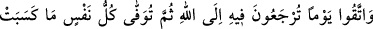
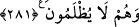

ALLAH’A DÖNÜŞ
281. Allah’a döndürüleceğiniz, sonra da herkese hak ettiğinin eksiksiz verileceği
ve kimsenin haksızlığa uğratılmayacağı bir günden sakının.
Bir gün gelecek Allah’a döneceksiniz. Allah Teâlâ da size hayır ve şer yaptığınız her
amelin karşılığını verecek ve hiçbir kimseye zulmetmeyecektir. Ne sevaplarını
eksiltecek, ne de azaplarını artıracaktır.
Ebedî olarak azâba dûçâr olanlar da zulme uğramış sayılmazlar. Çünkü buna sebep
küfürleridir. Küfürleri ise nefislerinin kazandığı şeylerdendir.
İbn Abbas (r.a.)’dan nakledilen bir rivayete göre bu âyet, en son nâzil olan âyettir. Hz.
Peygamber (s.a.), bu âyetin inmesinden bir müddet sonra Rabbine kavuşmuştur. Cebrâîl
(a.s.), Hz. Peygamber (a.s.)’e: “Bu âyeti, Bakara sûresinin iki yüz sekseninci âyetinin
peşine koy” dedi. Böylece bu âyet, müdâyene; yâni “borç sözleşmesi” âyeti ile ribâ
âyeti arasına konarak fâizden kaçınmak gerektiği vurgulanmak istenmiştir. Hz.
Peygamberin (a.s.) peygamber olarak gönderilmesi, Medîne’ye hicreti ve vefatı hep
pazartesi gününe rastgelmiştir. Bu âyetin inmesinden sonra Peygamberimiz, sekiz gün
hasta yatmış, ashâb-ı kirâm onu ziyârete gelmişlerdir. Hz. Peygamber’in en son sözü şu
olmuştur:
“Namaza dikkat edin ve eliniz altında bulunan kölelerinize karşı merhametli olun.
Biz Allah içiniz ve O’na döneceğiz.”[266]
Rasûlullah (s.a.) şöyle buyurmuştur: “Kime bir musîbet isâbet ederse benim
ölümümü hatırlasın. Çünkü benim ölümüm musibetlerin en büyüğüdür.”[267]
Yine Rasûlullah (s.a.) şöyle buyurmuştur: “Ümmetimden (kendisi hayatta iken) kimin
iki çocuğu ölürse Allah Teâlâ bunlar sebebiyle onu cennete sokar.”
Âişe validemiz: “Ya Rasûlallah, eğer bir tane olursa durum yine aynı mıdır?” diye
sorunca Peygamber Efendimiz (s.a.): “Evet, ya Aişe”, buyurdu.
Âişe validemiz: “Ya Rasûlallah, eğer hiç olmazsa sonuç ne olur?” diye tekrar
sorduklarında Rasûlullah (s.a.):
“Ben ümmetim için öncüyüm (önden gidenim). Onlar asla benim gibi musîbete
uğramayacaklardır”[268] buyurmuştur.